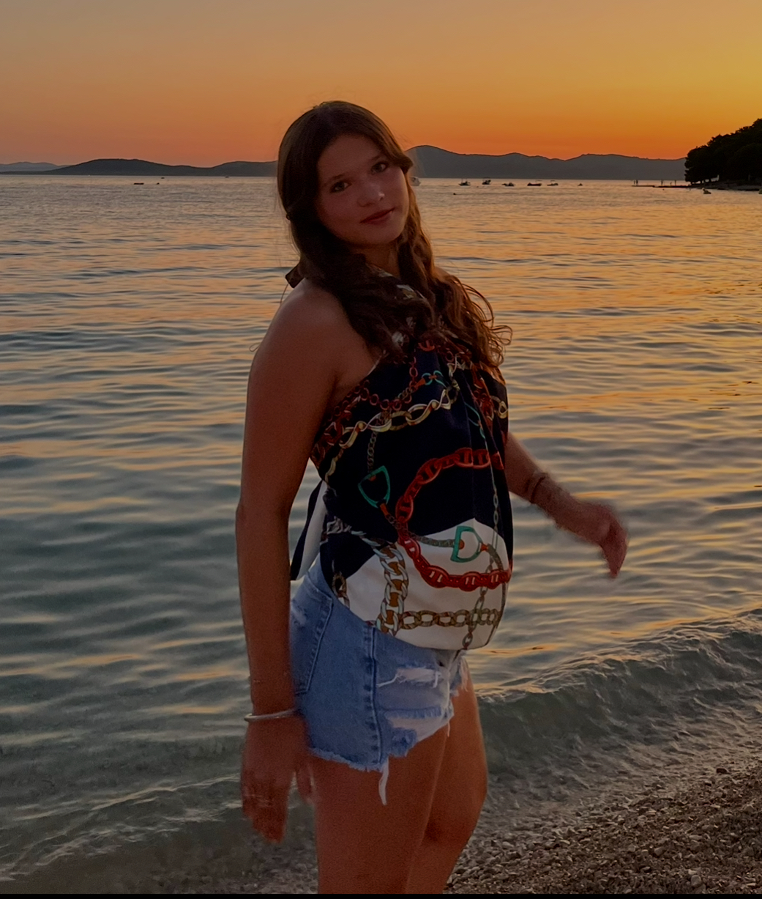

Gabrielle BOUCHEZ, eleve 2GTB

- Adresse :49 rue des Flandres 59130 LAMBERSART (France)
- Téléphone : 06 61 04 56 55
- Etablissement : Lasalle Lille
Lycée la Salle Lille
- Email : Gabrielle.BOUCHEZ-VERPRAET@lasallelille.com
Presentation
Je m’appelle Gabrielle Bouchez, j’ai 15 ans. Je suis une personne sérieuse, motivée et curieuse d’apprendre de nouvelles choses.
Je fais de l’équitation et de la natation. En dehors du sport, j’aime beaucoup voyager et découvrir de nouveaux pays.
Plus tard, j'aimerais travailler dans une entreprise internationale, afin de pouvoir voyager souvent et peut-être vivre à l’étranger.
Expérience
stage profesionnelle
Années : 3eme et 2nd
- Du 09/12/2024 au 13/12/2024 stagiaire pour Kingfisher (Seclin) Découverte de différents metiers en entreprise
- Du 09/02/2026 au 13/02/2026 stagiaire pour le siege de castorama (Seclin) ainsi que 1 journée en magasin (Henin Baumont)
Compétences développées dans le cadre de votre parcours scolaires (hors-stage)
Délégué ; Travail en équipe; Ponctualité
DIPLÔMES ET FORMATIONS
- Brevet des collèges - Collège Dominique Savio Lambersart (Juin 2025) - Lambersart
- certification pix - Collège Dominique Savio Lambersart (Juin 2025) - Lambersart
Qualités
- Sociable : m’entend facilement avec les autres
- Autonome : peut effectuer des petites tâches seule
- Respectueuse : respecte les adultes, les règle
Centres d'interêt
Animaux : j'aime être en contact avec les animaux, particulièrement grâce à l’équitation.
Voyages : j’aime découvrir de nouveaux pays, de nouvelles cultures et rencontrer des personnes différentes.
Amis : j’aime partager des moments avec mes amis, échanger et créer de nouveaux souvenirs.
Langue parlée
- Français
- Anglais
- Espagnol